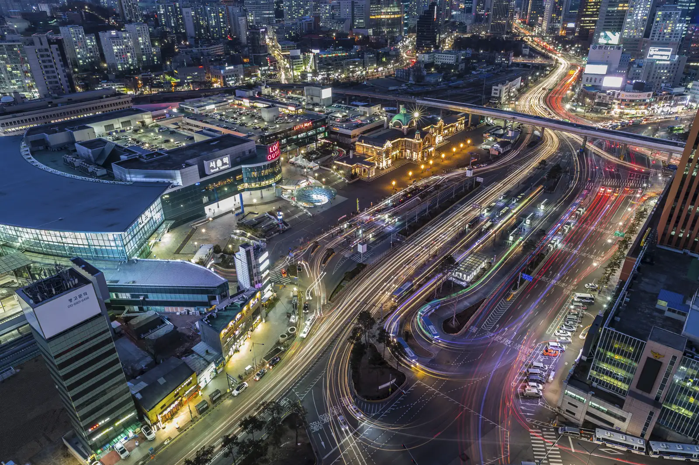

여행 정보Travel Info
입국부터 KTX·짐 배송까지, 부산 도착에 필요한 정보를 한 곳에
From arrival to KTX and baggage — everything you need for Busan, in one place
입국 안내Arrival Guide
한국 도착부터 BEXCO까지 — 항공편·KTX·버스·시내교통 전체 안내
Korea arrival to BEXCO — full guide: flights, KTX, bus & city transport
Part 1. 한국 입국Korea Arrival
부산 김해국제공항(PUS)은 아시아 주요 도시에서 직항편이 운항됩니다. 부산이 최종 목적지라면 환승 없이 바로 입국할 수 있습니다.
Busan Gimhae International Airport (PUS) offers direct flights from major Asian cities. If Busan is your final destination, you can arrive without a layover.
| 지역·국가Region / Country | 취항 도시Cities Served |
|---|---|
| 🇯🇵 일본Japan | 도쿄(나리타·하네다), 오사카(간사이), 나고야, 삿포로(신치토세), 후쿠오카 등Tokyo (Narita·Haneda), Osaka (Kansai), Nagoya, Sapporo (Chitose), Fukuoka, etc. |
| 🇨🇳 중국China | 베이징, 상하이, 칭다오, 광저우 등Beijing, Shanghai, Qingdao, Guangzhou, etc. |
| 🇹🇼 대만Taiwan | 타이베이(타오위안), 가오슝Taipei (Taoyuan), Kaohsiung |
| 🇻🇳 베트남Vietnam | 냐짱(깜란), 다낭, 호치민, 하노이Nha Trang (Cam Ranh), Da Nang, Ho Chi Minh City, Hanoi |
| 🇸🇬 싱가포르Singapore | 창이Changi |
| 🇹🇭 태국Thailand | 방콕(수완나품)Bangkok (Suvarnabhumi) |
| 🇵🇭 필리핀Philippines | 마닐라, 세부Manila, Cebu |
최신 운항 스케줄은 각 항공사 홈페이지 또는 예약 채널에서 확인하세요. Direct routes available from 26 cities / 7 countries · Airlines: Air Busan, Jin Air, Jeju Air, Korean Air, etc.
Check the latest schedules on each airline's website or booking platform.
부산 직항이 없는 지역에서 출발하는 경우, 인천공항(ICN)에서 대한항공 국내 구간을 이용해 김해공항(PUS)으로 환승할 수 있습니다.
For travelers without direct routes to Busan, you can connect via Incheon Airport (ICN) using a Korean Air domestic segment to Gimhae Airport (PUS).
- 대한항공 하루 5~6편 운항 (ICN → PUS)Korean Air operates 5–6 flights daily (ICN → PUS)
- 국제선 여정의 일부로만 예약 가능 (국제선 + 국내 연결편 통합 발권)Available only as part of an international itinerary (international + domestic combined ticketing)
- 인천 제2터미널(T2) 환승 후 김해공항에서 입국심사Connect at Incheon Terminal 2 (T2), then clear immigration at Gimhae Airport
| 편명Flight | 출발 (ICN)Departure (ICN) | 운항 요일Days |
|---|---|---|
| KE1401 | 07:45 | 매일Daily |
| KE1403 | 09:30 | 매일Daily |
| KE1411 | 16:35 | 월·금·토·일Mon·Fri·Sat·Sun |
| KE1405 | 18:20 | 매일Daily |
| KE1407 | 19:35 | 매일Daily |
| KE1409 | 20:45 | 매일Daily |
인천공항(ICN)에서 김포공항(GMP)으로 이동 후, 김포-부산 국내선을 이용하는 경로입니다.
This route involves traveling from Incheon Airport (ICN) to Gimpo Airport (GMP), then taking a domestic flight to Busan.
① ICN → GMP 이동① ICN → GMP Transfer
| 교통수단Mode | 소요시간Travel Time | 요금Fare |
|---|---|---|
| AREX 공항철도Airport Railroad | 약 30분~30 min | KRW 4,150 |
| 리무진버스Limousine Bus | 30~40분30–40 min | KRW 16,000~21,100 |
| 택시Taxi | 약 40분~40 min | KRW 43,000~ |
② GMP → PUS 항공편② GMP → PUS Flight
| 항공사Airline | 소요시간Travel Time | 일일 편수Daily Flights |
|---|---|---|
| Air Busan | 약 70분~70 min | 하루 10편10 flights/day |
| Korean Air | 약 60분~60 min | 하루 8편8 flights/day |
| T'way Air | 약 60분~60 min | 하루 3편3 flights/day |
| Jeju Air | 약 60분~60 min | 하루 1편1 flight/day |
인천공항에서 서울역으로 이동 후 KTX를 타고 부산역(KTX)까지 이동하는 경로입니다.
Travel from Incheon Airport to Seoul Station, then take the KTX to Busan Station.
① ICN → 서울역 이동① ICN → Seoul Station Transfer
| 교통수단Mode | 소요시간Travel Time | 요금Fare |
|---|---|---|
| AREX 직통열차Express Train | 약 43분~43 min | KRW 9,500 |
| 리무진버스 6001번Limousine Bus 6001 | 약 60~70분~60–70 min | KRW 17,000 |
| 리무진버스 6702번Limousine Bus 6702 | 약 60~70분~60–70 min | KRW 18,000 |
| 택시Taxi | 약 70분~70 min | KRW 60,000~ |
② 서울역 → 부산역 (KTX)② Seoul Station → Busan Station (KTX)
| 구분Class | 소요시간Travel Time | 요금(편도)Fare (one way) | 예약Booking |
|---|---|---|---|
| 특실 (First Class)First Class | 약 2시간 30분~2 hr 30 min | KRW 83,700 | korail.com |
| 일반실 (Standard)Standard Class | 약 2시간 30분~2 hr 30 min | KRW 59,800 | korail.com |
별도 환승 없이 인천공항에서 해운대까지 직행으로 이동하는 리무진버스입니다. 짐이 많은 경우 편리합니다.
A direct limousine bus from Incheon Airport to Haeundae with no transfers. Convenient if you have heavy luggage.
| 구분Item | 내용Details |
|---|---|
| 소요시간Travel Time | 약 5~6시간~5–6 hr |
| 요금Fare | KRW 53,500 |
| T1 운행시간T1 Operating Hours | 06:20 ~ 23:50 |
| T2 운행시간T2 Operating Hours | 06:00 ~ 23:30 |
T1 배차 시간표T1 Departure Schedule
Part 2. BEXCO 이동Getting to BEXCO
김해국제공항(PUS) 도착 후 BEXCO(센텀시티)까지 이동하는 방법입니다.
Options for getting from Gimhae International Airport (PUS) to BEXCO (Centum City).
| 교통수단Mode | 경로Route | 소요시간Travel Time | 요금Fare |
|---|---|---|---|
| 지하철Subway | 경전철 김해공항역 → 사상역 (1호선 환승) → 서면 (2호선 환승) → 센텀시티역Light Rail Gimhae Airport Station → Sasang (Line 1 transfer) → Seomyeon (Line 2 transfer) → Centum City Station | 약 70분~70 min | KRW 2,300 |
| 공항리무진Airport Limousine | 해운대·기장 방면 리무진 (BEXCO 인근 경유)Limousine toward Haeundae / Gijang (stops near BEXCO) | 약 60분~60 min | — |
| 택시Taxi | 국내선 청사 1층 2번 출구 승차 → BEXCO 직행Domestic Terminal 1F, Exit 2 → BEXCO direct | 약 60분~60 min | KRW 40,000~ |
KTX 부산역 도착 후 BEXCO(센텀시티)까지 이동하는 방법입니다.
Options for getting from Busan KTX Station to BEXCO (Centum City).
| 교통수단Mode | 경로 / 정보Route / Info | 소요시간Travel Time | 요금Fare |
|---|---|---|---|
| 지하철Subway | 부산역 (1호선) → 서면 (2호선 환승) → 센텀시티역Busan Station (Line 1) → Seomyeon (Line 2 transfer) → Centum City Station | 약 55분~55 min | KRW 1,800 |
| 버스 1001번Bus 1001 | 04:30 ~ 22:00 · 10분 간격 운행04:30 ~ 22:00 · Every 10 min | 약 40분~40 min | KRW 2,100 |
| 버스 1003번Bus 1003 | 04:20 ~ 22:20 · 10분 간격 운행04:20 ~ 22:20 · Every 10 min | 약 40분~40 min | KRW 2,100 |
| 택시Taxi | 부산역 택시 승차장 → BEXCO 직행Busan Station taxi stand → BEXCO direct | 약 30분~30 min | KRW 22,000~ |
KTX 예매KTX Booking
서울역·인천공항에서 부산역까지 고속열차로 약 2시간 30분. 가장 빠르고 편안한 선택.
High-speed rail from Seoul Station or Incheon Airport to Busan Station in ~2.5 hours. The fastest and most comfortable choice.

인천공항·서울역에서 BEXCO까지 — 전체 여정Incheon Airport · Seoul Station to BEXCO — the full journey
-
출발지Your departure point
한국 어디서 출발하든, KTX는 서울역에서 탑니다.Wherever you begin in Korea, you board the KTX at Seoul Station.
인천공항에서From Incheon Airport AREX 공항철도로 서울역까지 약 43분AREX Airport Railroad → Seoul Station ~43 min서울역에서From Seoul Station 환승 없이 바로 KTX 탑승Board the KTX directly -
KTX 예매Book your KTX
탑승 전 미리 예매하세요 — 출발 1개월 전부터 가능합니다.Reserve before you ride — tickets open up to 1 month ahead.
- KORAIL 공식 홈페이지KORAIL website — letskorail.com에서 시간표 검색·좌석 예약search schedules & reserve seats at letskorail.com
- 코레일 Talk 앱Korail Talk app — 모바일 예매·QR 승차권·실시간 좌석 확인mobile booking, QR tickets, live seat availability
- 역 창구 발권Station ticket window — 현장 구매, 서울역 영어 지원 직원 배치buy in person; English-speaking staff at Seoul Station
-
KTX 탑승 → 부산역Ride the KTX → Busan Station
-
APHRS 셔틀 탑승Transfer to the APHRS shuttle
-
도착 — BEXCO / 공식 호텔Arrive — BEXCO / Official Hotels
부산역에서 행사장·숙소까지 셔틀로 논스톱. 미리 예약해 두면 도착 즉시 탑승할 수 있습니다.Non-stop shuttle from Busan Station to the venue & your hotel. Book ahead to board the moment you arrive.
짐 배송Baggage Delivery
공항 ↔ 공식 호텔 간 수하물 운송. 무거운 짐 없이 가볍게 이동하세요.
Airport ↔ official hotels luggage transfer. Travel light without heavy bags.
서비스 옵션Service Options

공항 → 호텔 배송Airport to Hotel luggage transfer
- 도착 후 공항 지정 카운터에 짐 맡기기Drop off bags at the designated counter on arrival
- 짐 없이 가볍게 호텔로 이동Travel light to your hotel without luggage
- 당일 또는 익일 호텔 객실까지 배달Same-day or next-day delivery to your hotel room
호텔 → 공항 배송Hotel to Airport luggage transfer
- 출발 전날 예약 필수Must book by the day before departure
- 호텔 컨시어지에 짐 맡기기Leave bags with hotel concierge
- 공항까지 안전하게 운송Safe transport to the airport
- 체크인 전 지정 카운터에서 수령Collect at designated counter before check-in
공식 파트너사Official Partner

Zimcarry
Zimcarry는 수천 명의 해외 여행객이 신뢰하는 한국의 대표 공항·호텔 간 수하물 이송 서비스입니다. 수거부터 배달까지 전 과정을 안전하게 처리합니다.
Zimcarry is Korea's leading airport-to-hotel luggage transfer service, trusted by thousands of international travelers. Every step from pickup to delivery is handled safely.
Zimcarry 바로가기 ↗Visit Zimcarry ↗예약 방법How to Apply
포털에서 예약Book via Portal
이 페이지의 예약 폼을 이용하면 가장 빠르게 예약하고 즉시 확인을 받을 수 있습니다.
Use the booking form on this page for the fastest reservation with instant confirmation.
이메일 문의Email inquiry
도착일, 호텔명, 항공편 정보를 ops@groundk.com으로 보내주세요.
Send your arrival date, hotel name, and flight info to ops@groundk.com.
현장 접수On-site Registration
김해공항 도착 홀 또는 공식 호텔 컨시어지에서도 현장 접수가 가능합니다.
On-site registration is also available at Gimhae Airport arrivals hall or at the official hotel concierge.
짐 배송 서비스는 APHRS 2026 공식 호텔에 투숙하는 참가자에 한해 이용 가능합니다. 배송 가능 중량 및 품목 제한이 있으며, 귀중품·위험물은 별도 처리됩니다. 자세한 사항은 예약 시 안내드립니다.
Baggage delivery is available exclusively to participants staying at APHRS 2026 official hotels. Weight and item restrictions apply; valuables and hazardous materials are handled separately. Full details will be provided at the time of booking.
eSIM
출국 전 미리 설정해 김해공항 도착 즉시 한국 통신망에 연결하세요. 물리 유심 없이 디지털로 개통합니다.
Set up before departure and connect to Korean networks the moment you land at Gimhae Airport — fully digital, no physical SIM card.
지원 통신사Supported Carriers
KT (Korea Telecom)
국내 2위 통신사. 부산 전역, BEXCO 및 컨퍼런스 호텔에서 안정적인 커버리지를 제공합니다.
Korea's 2nd-largest carrier. Provides stable coverage across Busan, BEXCO, and conference hotels.
SK Telecom
국내 최대 가입자를 보유한 통신사. 부산 도심에서 최고 수준의 5G 성능을 제공합니다.
Korea's largest carrier by subscribers. Delivers top-tier 5G performance in central Busan.
LG U+
합리적인 데이터 요금제 제공. 세션 참가가 많은 대용량 데이터 사용자에게 적합합니다.
Offers competitive data plans. Ideal for heavy data users attending multiple sessions.
※ 네트워크 가용성은 기기 및 사용 환경에 따라 다를 수 있습니다. 기기와 사용 패턴에 맞는 통신사를 안내해 드립니다.
※ Network availability may vary by device and usage environment. We will recommend the carrier best suited to your device and usage pattern.
신청 방법How to Apply
기기 호환성 확인Check Compatibility
eSIM은 지원 기기에서만 사용할 수 있습니다. 신청 전 내 기기가 eSIM을 지원하는지 먼저 확인해 주세요(아래 호환성 안내 참고).
eSIM works only on supported devices. Before applying, confirm your device supports eSIM (see the compatibility note below).
예약 완료Complete Booking
도착일, 기기 모델, 연락처를 입력하고 예약을 완료하세요. 이메일로 주문 확인서가 발송됩니다.
Enter your arrival date, device model, and contact info to complete your booking. A confirmation email will be sent.
개통 & 연결Activate & Connect
이메일로 받은 QR코드를 스캔해 eSIM 프로파일을 설치하면, 입국 즉시 한국 통신망에 자동 연결됩니다.
Scan the QR code sent by email to install the eSIM profile — it auto-connects to Korean networks the moment you arrive.
주요 특징Highlights
- 물리 유심 불필요 — 즉시 디지털 개통No physical SIM — instant digital activation
- 출국 전 기기에 미리 설정Set up on your device before departure
- 입국 즉시 자동 활성화Auto-activates upon arrival
- 데이터 전용 또는 음성+데이터 요금제 선택Data-only or voice + data plan
신청 전 확인 — 기기 호환성Before You Apply — Compatibility
- eSIM 지원 모델인지 확인 (iPhone XS 이상, 갤럭시 S20+, Pixel 3+ 등)eSIM-supported model (iPhone XS+, Galaxy S20+, Pixel 3+, etc.)
- 언락(공기계) 또는 한국 통신사 eSIM 프로파일 지원 여부Unlocked or supports a Korean carrier eSIM profile
- 현재 통신사가 eSIM 개통을 제한하지 않는지Current carrier does not restrict eSIM activation
지원하지 않거나 확실하지 않으면 신청 전 문의: ops@groundk.com
If unsupported or unsure, contact us before applying: ops@groundk.com